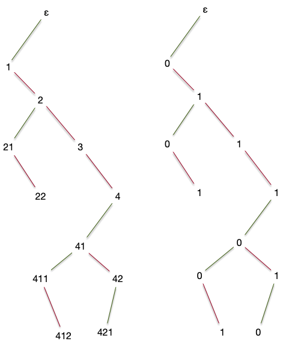
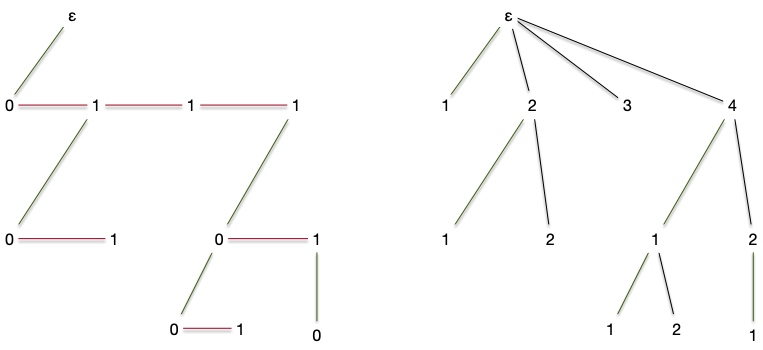
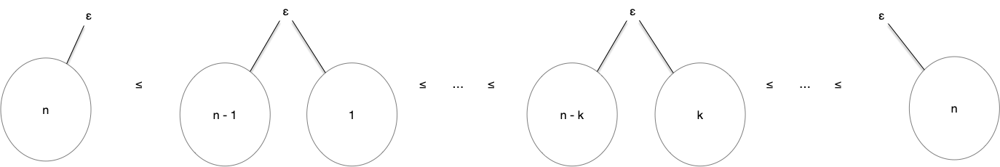

Arbres de Catalan
Dit binaires. Arbre les plus utilisés en algorithmie.
TBD définition Monter que c'est pas pareil que des arbres planaires binaires car si un enfant, il peut être à droite.
TBD dessin
On connaît l'ordre gauche ou droite des enfants. TBD génération ensembliste recursive.
Bijection Planaire et Catalan
fils ainé, sœur cadette.



Compter
Nombre de Catalan TBD déduire de la forme sous arbre g et D la récurrence avec la somme qui permet de faire le compte normal
Puis écrire l'equation combinatoire. TBD série generatrice (formelle)
ce n'est pas grave si ça n'a pas de rayon de convergence. Le but est juste de trouver les coefficients. si la série converge, alors les coefficients sont les même cependant (ce qu'on va faire ici)
Trouver les coefficients.
si on veut faire "normal" : trouver un rayon de convergence. Soit par Dyck, soit directement https://les-mathematiques.net/vanilla/discussion/795096/majorant-catalan et pour les formules, voir : https://www.math.univ-toulouse.fr/~schechtman/saint-criq-catalan.pdf TBD attention, ça tombe aux concours.
fonction génératrice pour les compter
Choix aléatoire
Ordre et on prend un nombre au hasard. On associe un ordre qui depend du nombre d'éléments

Arbres binaires complet
Def ensembliste et dessin. idem que catalan. p10 livre arbre pour l'algorithmique.
arbre binaire planté
En informatique, c'est souvent les arbres binaires planté que l'on utilise :
Un arbre planté est binaire si tout nœud intérieur a au plus 2 enfants. On aura parfois aussi besoin qu'il soit complet, c'est-à-dire que les nœuds intérieurs qui n'ont pas 2 enfants sont en bas de l'arbre (à la hauteur de l'arbre -1).
propriété fondamentale des arbres binaires
Montrer que pour un arbre binaire, si tout nœud intérieur a exactement 2 enfants, alors en notant $f$ le nombre de feuilles de l'arbre, on a : $f$ est égal au nombre de nœuds intérieurs plus 1.
solution
solution
Si chaque nœud intérieur a 2 enfants $ \sum \delta(x) = 2 + f + (n-f - 1) \cdot 3$. Comme $\vert E \vert = \vert V \vert -1 = n -1$, on assemble ces deux équations pour obtenir $n + 1 = 2f$.
TBD la hauteur de l'arbre est égale à $\log_2(f)$ si les feuilles sont à h ou h-1
Les propriétés ci-dessus montrent que si l'on veut organiser $n$ données, on n'a besoin que d'un arbre de hauteur $\log_2(n)$. Comme le chemin depuis la racine nous permet de retrouver les données, si on associe une question à chaque nœud intérieur, on peut retrouver $n$ éléments en ne posant que $\log_2(n)$ questions. C'est le principe des arbres de décisions, si utiles en apprentissage automatique.
La différence en $\log_2(n)$ et $n$ est très importante ! On par exemple besoin d'uniquement 100 questions pour trier 1267650600228229401496703205376 éléments. Un informaticien est prêt à beaucoup, beaucoup de choses pour avoir une structure en $\log_2(n)$.
parcours
Pour modifier la structure du tas on a dû évoluer dans la structure d'arbre planté. Un autre intérêt (encore un !) des arbres plantés est que tout sommet peut être considéré comme la racine de sous-arbre. On a donc uniquement besoin de créer l'algorithme qui fonctionnera pour la racine et le re-exécuter ensuite sur les descendants.
On utilise ce principe pour parcourir tous les sommets d'un arbre planté efficacement, c'est à dire en ne regardant chaque sommet qu'un nombre constant de fois.
trois parcours classiques
Pour chaque parcours ci-après, donnez le résultat pour l'arbre de la partie ordonnancement des sommets en supposant que Examen de la Racine signifie : affiche le numéro de la racine à l'écran.
Une fois ceci fait, trouvez un ordre qui lira les sommets dans l'ordre alphabétique à partir de la lettre b (en oubliant la racine).
solution
solution
- pré-ordre : a-b-h-l-m-n-i-j-k-c-d-e-g-f
- post-ordre : l-n-m-h-j-k-i-b-g-e-f-d-c-a
- en-ordre : l-h-n-m-b-j-i-k-a-c-g-e-d-f
alphabétique(racine)
examen enfant gauche
examen enfant droit
alphabétique(enfant droit)
alphabétique(enfant gauche)
pré-ordre
pré-ordre(racine)
Si la racine existe:
Examen de la racine
pré-ordre(enfant gauche)
pré-ordre(enfant droit)post-ordre
post-ordre(racine)
Si la racine existe:
post-ordre(enfant gauche)
post-ordre(enfant droit)
Examen de la racineen-ordre
en-ordre(racine)
Si la racine existe:
en-ordre(enfant gauche)
Examen de la racine
en-ordre(enfant droit)Les parcours d'arbres sont utilisés en linguistique pour analyser syntaxiquement une phrase. Un exercice classique est de créer un arbre à partir d'une expression arithmétique pour la résoudre de façon optimale en nombre d'opérations.